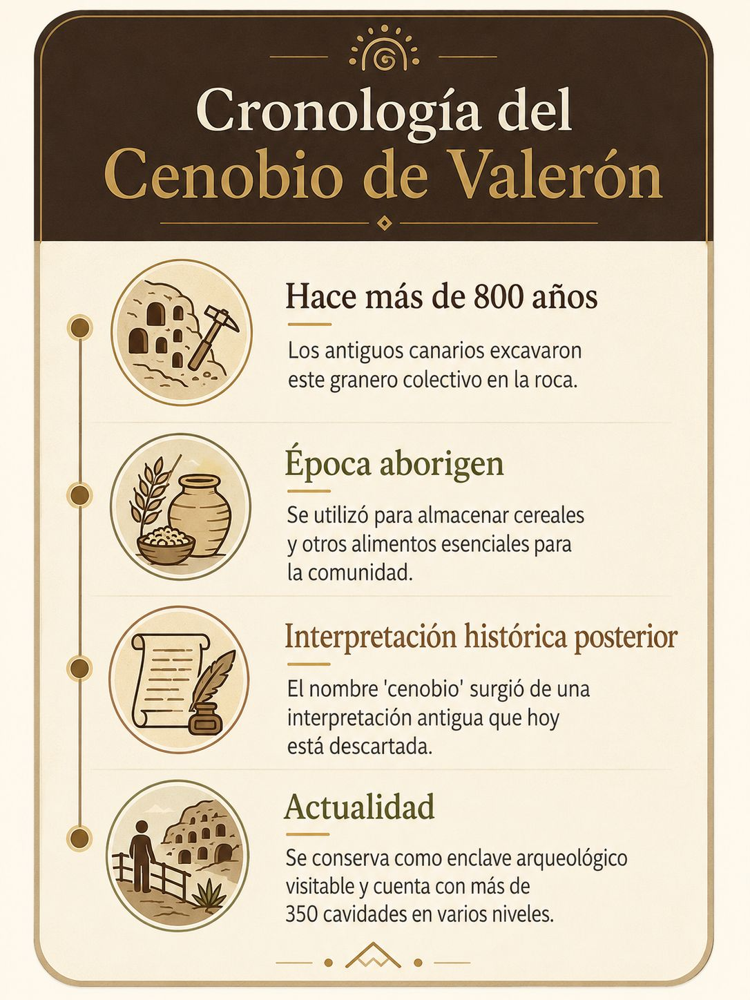

Origen e identidad
Un nombre vinculado a una antigua interpretación
El Cenobio de Valerón es uno de los yacimientos arqueológicos más emblemáticos de Gran Canaria. Su nombre procede de una interpretación histórica antigua que lo asociaba a un espacio religioso aborigen. Con el paso del tiempo, las investigaciones han permitido comprender mejor su verdadera función y su enorme relevancia dentro del patrimonio arqueológico insular.
Hoy se reconoce como un enclave de gran valor histórico y cultural, integrado en la red de espacios arqueológicos de Gran Canaria y considerado una referencia esencial para conocer la sociedad aborigen de la isla.
Qué era realmente
No era un cenobio, sino un granero colectivo aborigen
Aunque durante mucho tiempo se creyó que se trataba de un espacio religioso, los estudios actuales han demostrado que su función era muy distinta. El Cenobio de Valerón fue un granero colectivo excavado en la roca y destinado al almacenamiento de productos esenciales para la comunidad.
Está compuesto por más de 200 silos y cavidades, utilizados principalmente para conservar cebada, además de otros recursos agrícolas. Esta organización revela una sociedad capaz de gestionar el territorio, planificar reservas y asegurar su subsistencia.

Un enclave único
El granero prehispánico más grande de Gran Canaria
El Cenobio de Valerón destaca por ser uno de los graneros prehispánicos más importantes de la isla, tanto por la complejidad de su estructura como por su integración en el paisaje. Su localización estratégica y su estado de conservación lo convierten en uno de los testimonios más valiosos de la cultura de los antiguos canarios.

Valor histórico y cultural
Un testimonio de la antigua sociedad canaria
Este yacimiento permite comprender mejor cómo se organizaban los antiguos canarios, cómo gestionaban los recursos y qué relación mantenían con el territorio. Más allá de su interés arqueológico, representa una parte esencial de la memoria histórica de Gran Canaria.
Conservar el Cenobio de Valerón significa proteger un legado material y simbólico que ayuda a interpretar el pasado de la isla y a valorar la riqueza cultural que todavía permanece visible en su paisaje.